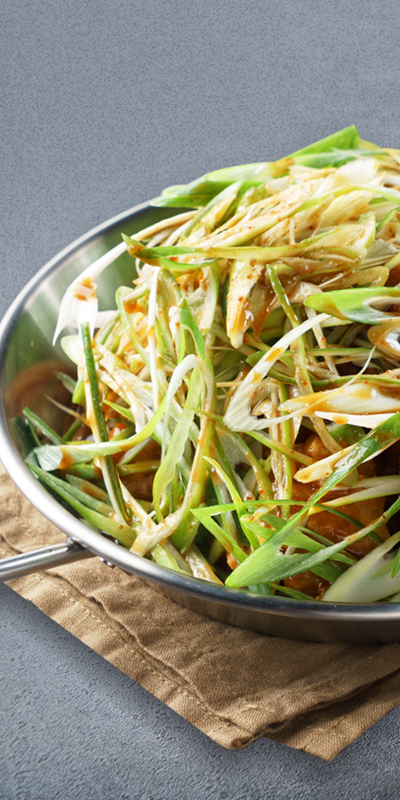

- 가맹상담
- 사업소개
- 예비 점주와의 회의
- 상권분석
- 점포개발 및 상권조사
- 사전체험시스템 이용
- 가맹계약
- 가맹계약서작성
- 서비스교육
- 시설공사
- 인테리어 시설 설치
- 본사임원 및 슈퍼바이저 공사감리
- 인.허가 및 운영교육
- 인허가신청
- 점검 및 조리실습
- 서비스 교육
- 개점준비
- 초도상품, 판촉상품,식자재 입고 등 개점준비
- 오픈
- 사후관리

HOME > FRANCHISE > 창업안내
최소원가율이 적용된 직영공장 직배송시스템과 인건비 절감효과등은 가맹점 수익이 극대화되고 안정적인 수익구조를 만듭니다.
10대부터 50대까지 폭넓은 고객층 확보
젊은여성층, 학생을 주고객으로 남녀노소를 불문하고 고객층을 주요목표로 합니다.
저렴한 창업비용, 초보창업, 업종전환 용이
창업비용이 저렴합니다. 식자재 전문제자공장의 전문가들이 원가율을 감안한 특화된 전문시스템으로 초보자도 조리가 가능한 조리시스템을 만들어 음식조리에 대한 문제를 해결할 수 있습니다.
- 창업비용
- 초보창업
- 업종전환
가맹점주님의 성공창업을 위해 최고의 점포를 최저의 금액으로 안내해드립니다.
상권분석팀은 메이저 브랜드의 입지선정노하우와 매출데이터를 기반으로 예상매출 예측 시스템을 적용하여 보다 안정적인
창업을 위해 전국 지역발굴 최고의 상권분석을 해놓은 상태입니다
프랜차이즈 본사 경험 및 현장경험 10년의 노하우를 가지고 있는 상권분석팀은 단순한 예상매출이 아닌
배출데이터와 상권현황을 토대로 최고의 점포를 안내해드립니다. 직접확인해 보시기 바랍니다.
입점점보 선정절차
-
01. 맞춤형 가맹지역선정
- 우수 가맹지역추천
- 점주 희망지역 상권분석
- 자금에 맞는 가맹지역 추천
-
02. 입점점포 입지분석
- 동종업종 현황분석 및 매출분석
- 입점지역 인구분석 및 소비성향 분석
- 예상매출 예측시스템을 통한 매출분석
- 투자대비 수익률 분석
-
03. 법률관련사항 분석
- 각종 인·허가사항 및 행정업무 확인
- 임대차 계약시 문제사항 확인
-
04. 입점지역 점포확정
- 권리계약 및 임대차 계약
- 점포실측 및 도면미팅
- 인테리어 시공
독자적인 매장관리시스템의 개발로 효율적인 매장매출을 관리합니다.
무아몽 본사 중앙시스템
- 본사 중앙시스템에 의한 과학적 매출관리
- 매출활성화 전략도출 및 체계적 실행
- 해당 수퍼바이저 및 마케팅 전담팀 협의체 구성
- 매출액 하위 가맹점 및 전월대비하락가맹점 선별
- 가맹점별 매출액 및 수익분석
- 전문 수퍼바이징 시스템
- 본사 임직원에 의한 크로스체킹
- 교육활성화를 통한 자기개발 강화
- 실시간 매장관리 시스템
- 매출관리시스템
-
- 매장경영컨설팅 및 지속적인 가맹점교육
- CCTV시스템을 통해 실시간 매장 서비스체크 및 관리
- 외부초청강사를 통해 분야별 다양한 교육프로그램시행
- POS 시스템을 통한 데이터 분석 및 관리
“시작” 을 어떻게 하느냐에 따라 사업의 성패가 결정됩니다.
본사 전 직원 가맹점의 성공적인 시작을 알리는 그랜드 오픈 마케팅 활동에 전념을 다합니다.
그랜드오픈 프로모션
- 01. 매출활성화를 위한 프로모션
- 본사차원의 전 가맹점 대상 프로모션은 물론, 수퍼바이저 및 가맹점주의 의견, 그리고 지역특색을 적극 반영한 가맹점 맞춤형 프로모션 등을 통해 전 가맹점의 매출 활성화에 기여하고 있습니다.
- 02. 온라인프로모션
- 온라인이벤트 및 소셜커머스를 이용한 홍보등을 통하여 주 고객층(20대~30대, 여성, 학생등) 에 적극홍보
- 03. 판촉물 및 인쇄물지원
- 명함, 쇼핑백, 전단지 등 지원
무아몽 가맹점주님들을 위한 특별한 교육시스템이 구성되어 있습니다.
교육안내
사전체험교육
- 목적 : 창업사전 체험을 통한 성공확신 부여
- 대상 : 창업을 희망하는 예비점주님
- 장소 : 본사내 교육장
- 기간 : 1일
- 내용 : 창업설명회 참관 프로그램 중 버거쿡 대표 메뉴조리를 직접 경험할 수 있는 체험시스템
- 목적 : 성공창업을 위한 기분 운영교육
- 대상 : 가맹계약 완료 후, 오픈 준비중인 점주님
- 장소 : 본사내 교육장
- 기간 : 1일
- 내용 :
- 1. 프랜차이즈 산업 및 시스템에 대한 이해
- 2. 무아몽 브랜드 집중탐구
- 3. 운영 및 서비스교육(인사/전화예절/고객응대/유니폼)
- 4. 직원관리 및 홀 접객교육
- 5. 세무교육
- 6. 기타 매장관리 전반, 세부운영 노하우 교육
- 목적 : 맛있는 조리 노하우 교육
- 대상 : 운영교육을 수료한 점주
- 장소 : 본사내 조리교육장
- 기간 : 14일
- 내용 :
- 1. QSC교육(Quality/ Service/ Cleanness)
- 2. 기기 및 기물교육(사용법 및 관리)
- 3. 위생 및 식재료 관리(선입선출, 감수, 식재관리, 위생관리)
- 4. 매뉴교육(정량교육, 반복적 메뉴교육)
- 5. 발주 및 POS교육
- 6. 시간대별 매장관리 및 청소관리교육
- 목적 : 현장체험교육을 통한 실무능력강화
운영교육
조리교육
매장실무교육
01. 수퍼바이저 사전조사 및 성공전략 모색
- 매장선정이후 관련사항에 대해 전반적으로 체크
- 매장운영에 따른 문제요소 사전관리
- 인테리어 공사진행사항 및 건물관련 법적문제 건물관계 등
성공런칭을 위한 사전점검
02. 동일상권 내 매출액 1위전략 도출
- 주변상권 전체업종 분석
- 경쟁업체분석: 점포수, 메뉴, 고객성향, 마케팅 등 전반적인 사항
- 매출액 1위전략 도출 / 가맹점주 교육 및 진행일정확인
동일상권 분석을 통한 매출활성화
03. 분야별 전문가 파견실전지원
- 오픈까지 수퍼바이저, 인테리어팀장, 본사임원이 감리사항 크로스 체크
- 오픈당일 전문 오픈지원팀 파견 (매장운영, 실전지도)
성공오픈을 위한 체계적 지원
04. 오픈리허설
- 오픈 1일전 전반적인사항 체크
- 수퍼바이저, 조리바이저 파견
- 인테리어, 조리시스템, 직원배치 등 오픈전 최종확인
리허설을 통한 최종 체크
05. 오픈과 마케팅
- 수퍼바이저와 오픈 프로모션 전략수립
- 직접 찾아가는 이벤트 진행
- 분석을 통한 구전마케팅 활성화 유도
프로모션을 진행을 통해 신규고객창출
| 구 분 | ROAD SHOP 점 | |
|---|---|---|
| 사 항 | 세부비용 | 10~15평형 |
| 가맹비 | 브랜드비용, 상권보호, 운영노하우제공, 기타 특수상권 |
별도협의 |
| 실내인테리어 | 목공사, 도장공사, 전기공사, 바닥공사, 조명공사 | 별도협의 |
| 주방집기 및 비품 (기본사양) | 냉동냉장고, 씽크대, 선반대, 주방기기시설, 주방용품, 작업대, 2조튀김기, 발효기, 주방집기, 그릇류 |
별도협의 |
| 간 판 | 본간판(LED) 4m기준, 돌출간판, 내부사인물 | 별도협의 |
| 교육비 | 매장경영노하우, 조리기술제공, 매장현장 | 별도협의 |
| POS/음향 | POS관련기기 및 음향기기 (POS, 휴대용단말기, 모니터, 음향기, 프린터) |
임대 |
| OPEN 홍보비용 | 배너, 전단지(8,000장) 메뉴판, 쿠폰 | 별도협의 |
| 기타비용 | 유니폼, 명함, OPEN플랜카드 | 별도협의 |
| 합 계 | 500만원 | |
※ 별도금액 : 철거, 전기승압, 배전판, 소방, 가스공사, 어닝, 냉난방, TV, 닥트시설, 화장실 및 순간온수기(간판기둥)외부공사, 주방설비,
준시설외, 전면공사, 추가메뉴에 따른 기기 구입대
Q. 가맹점을 운영하는 경우 제품 마진율이 어떻게 되나요?
상권 및 식자재 물가 등락 폭에 따라 다소 차이가 있을 수 있으나 평균 35%정도 됩니다.
37%는 제반관리비를 제한 순이익으로 보시면 됩니다.Q. 상권보호는 어떻게 해주시나요?
계약서의 권역(섹터, Sector)표시하여 신규 가맹 시 기존 가맹점과 협의하여 입점하고 있습니다.
Q. 점포는 구해주시나요?
본사 영업팀을 통해 의뢰하시면 됩니다.
직접 알아보실 경우 점포계약 전 상권분석 의뢰하시면 됩니다.Q. 조리경험이 없는데 배우면 조리가 가능한가요?
본사 조리교육 및 가공제품의 공급으로 초보자라도 쉽게 조리가 가능하며,
현재 운영중인 가맹점의 경우 조리장을 채용 운영하는 경우가 많습니다.Q. 식자재 원가율은 어떻게 되나요?
본사 공급제품가격을 일정화하여 매장의 원가 부분을 조정하므로 약 40% 정도 유지하기 위해
정성을 다하고 있습니다.Q. 식자재 개별 사입이 가능한가요?
신선을 필요로 하는 채소를 제외한 전 품목을 본사가 납품하고 있습니다.
각 재료는 본사의 노하우가 집약되어 있으므로 맛의 동일성을 위해 불가합니다.Q. 물류공급은 어떻게 하나요?
본사 물류를 통해 주 3회(월,수,금) 배송하고 있습니다.
Q. 물품대금은 어떻게 결제하나요?
본사 가맹계약에 따라 계좌로 입급하시면 됩니다.
Q. 장기적 사후관리는 어떻게 하나요?
본사 슈퍼바이저 및 조리장 파견을 통한 매장 매출관리, 맛 관리를 정기적으로 하고 있으며,
매출부진 매장의 경우 본사에서 무상 지원하는 재활프로그램을 통해 매출증대를 하고 있습니다.Q. 매장오픈시 홍보는 어떻게 하나요?
오픈시 전단작업을 통해 위치알리기부터 시작하며, 쿠폰을 통해 고정고객 확보와 포털과 홈페이지를 통해
지속적 홍보지원을 하고 있습니다. 회사 소식지를 통해 성공사례를 홍보하고 있습니다.Q. 인허가 사항은 어떻게 해야 하나요?
즉석 조리판매업으로 허가하시면 됩니다. 특별한 자격증이 필요하지 않습니다.(보건증 필요)
일정 및 방법은 담당 슈퍼바이저가 일정에 맞추어 말씀드리니 협의 진행하시면 됩니다.Q. 창업시 본사가 금전적 지원은 없나요?
대출 등 직접적인 출자는 없습니다. 단 본사가 가맹점의 매출증대 및 성공창업을 위해
창업보증제도를 시행하고 있습니다Q. 조리교육은 몇일 받나요?
가맹계약후 본사일정에 따라 본사에서 3일간 실시하며, 본인의 의지에 따라 2~6개월간 추가비용 없이
교육연장이 가능합니다. 단, 점포 오픈 후 재교육이 필요 시 조리장 파견은 유상으로 이루어 집니다.Q. 주방직원 몇 명이나 있어야 하나요?
주방2명, 홀 1명, 본사 분석 자료상 8평 매장 70만원 일일매출 기준입니다.
(기본3명, 점주포함)


- 